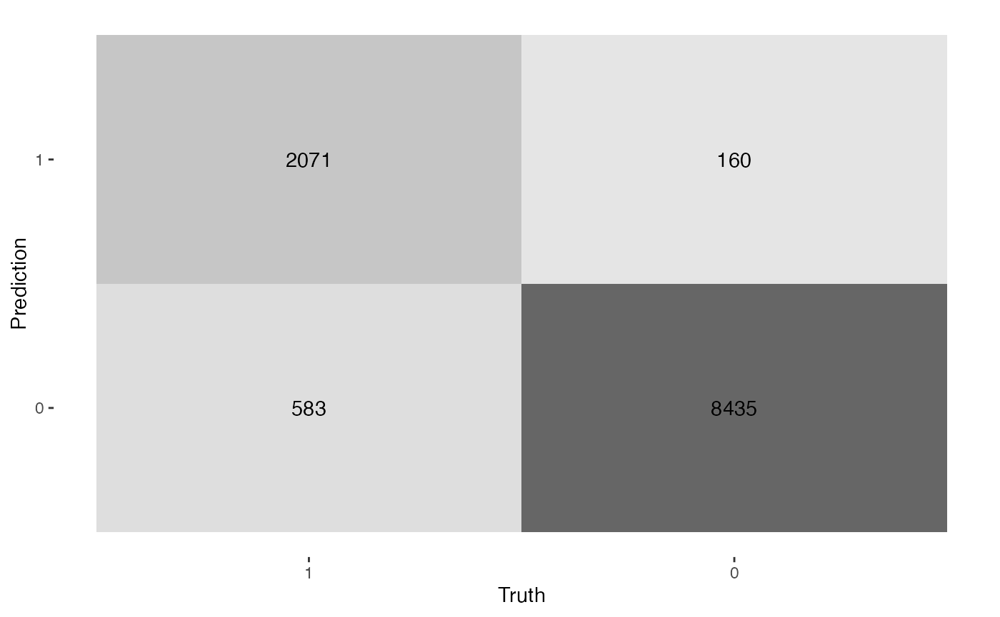

Inference with xgboost
Source:vignettes/articles/Inference-with-xgboost.Rmd
Inference-with-xgboost.RmdThis article contains a workflow in R to analyze a data set using xgboost to get insights that can help a consultant make important business decisions.
knitr::opts_chunk$set(warning = FALSE, message = FALSE)
library(pacman)
library(tidyverse); library(EIX); library(validata); p_load(TidyConsultant)
set.seed(1)Inspect data set
We will use the HR_data from the EIX package. Let’s inspect the variables using the validata package.
HR_data
#> satisfaction_level last_evaluation number_project average_montly_hours
#> <num> <num> <int> <int>
#> 1: 0.38 0.53 2 157
#> 2: 0.80 0.86 5 262
#> 3: 0.11 0.88 7 272
#> 4: 0.72 0.87 5 223
#> 5: 0.37 0.52 2 159
#> ---
#> 14995: 0.40 0.57 2 151
#> 14996: 0.37 0.48 2 160
#> 14997: 0.37 0.53 2 143
#> 14998: 0.11 0.96 6 280
#> 14999: 0.37 0.52 2 158
#> time_spend_company Work_accident left promotion_last_5years sales
#> <int> <int> <int> <int> <fctr>
#> 1: 3 0 1 0 sales
#> 2: 6 0 1 0 sales
#> 3: 4 0 1 0 sales
#> 4: 5 0 1 0 sales
#> 5: 3 0 1 0 sales
#> ---
#> 14995: 3 0 1 0 support
#> 14996: 3 0 1 0 support
#> 14997: 3 0 1 0 support
#> 14998: 4 0 1 0 support
#> 14999: 3 0 1 0 support
#> salary
#> <fctr>
#> 1: low
#> 2: medium
#> 3: medium
#> 4: low
#> 5: low
#> ---
#> 14995: low
#> 14996: low
#> 14997: low
#> 14998: low
#> 14999: low
HR_data %>%
diagnose_category(max_distinct = 100)
#> # A tibble: 13 × 4
#> column level n ratio
#> <chr> <fct> <int> <dbl>
#> 1 sales sales 4140 0.276
#> 2 sales technical 2720 0.181
#> 3 sales support 2229 0.149
#> 4 sales IT 1227 0.0818
#> 5 sales product_mng 902 0.0601
#> 6 sales marketing 858 0.0572
#> 7 sales RandD 787 0.0525
#> 8 sales accounting 767 0.0511
#> 9 sales hr 739 0.0493
#> 10 sales management 630 0.0420
#> 11 salary low 7316 0.488
#> 12 salary medium 6446 0.430
#> 13 salary high 1237 0.0825
HR_data %>%
diagnose_numeric()
#> # A tibble: 8 × 11
#> variables zeros minus infs min mean max `|x|<1 (ratio)` integer_ratio
#> <chr> <int> <int> <int> <dbl> <dbl> <int> <dbl> <dbl>
#> 1 satisfact… 0 0 0 0.09 6.13e-1 1 0.993 0.00740
#> 2 last_eval… 0 0 0 0.36 7.16e-1 1 0.981 0.0189
#> 3 number_pr… 0 0 0 2 3.80e+0 7 0 1
#> 4 average_m… 0 0 0 96 2.01e+2 310 0 1
#> 5 time_spen… 0 0 0 2 3.50e+0 10 0 1
#> 6 Work_acci… 12830 0 0 0 1.45e-1 1 0.855 1
#> 7 left 11428 0 0 0 2.38e-1 1 0.762 1
#> 8 promotion… 14680 0 0 0 2.13e-2 1 0.979 1
#> # ℹ 2 more variables: mode <dbl>, mode_ratio <dbl>xgboost binary classification model
Create dummy variables out of the Sales and Salary column. We will
predict whether an employee left the company using xgboost. For this
reason, set left = 1 to the first level of the factor, so
it will be treated as the event class. A high predicted indicates a
label of the event class.
HR_data %>%
framecleaner::create_dummies() %>%
framecleaner::set_fct(left, first_level = "1") -> hr1Create the model using xgboost. Since the goal of this model is to run inference using trees, we want to set tree_depth to 2 to make easily-interpretable trees.
When the model is run, feature importance on the full data is printed. Also the data is split into train and test, where the accuracy is calculated on a test set. Since this is a binary classification problem, a confusion matrix is output along with binary metrics.
hr1 %>%
tidy_formula(left) -> hrf
hr1 %>%
tidy_xgboost(hrf, tree_depth = 2L, trees = 100L, mtry = .75) -> xg1
#> # A tibble: 15 × 3
#> .metric .estimate .formula
#> <chr> <dbl> <chr>
#> 1 accuracy 0.934 TP + TN / total
#> 2 kap 0.806 NA
#> 3 sens 0.780 TP / actually P
#> 4 spec 0.981 TN / actually N
#> 5 ppv 0.928 TP / predicted P
#> 6 npv 0.935 TN / predicted N
#> 7 mcc 0.811 NA
#> 8 j_index 0.762 NA
#> 9 bal_accuracy 0.881 sens + spec / 2
#> 10 detection_prevalence 0.198 predicted P / total
#> 11 precision 0.928 PPV, 1-FDR
#> 12 recall 0.780 sens, TPR
#> 13 f_meas 0.848 HM(ppv, sens)
#> 14 baseline_accuracy 0.764 majority class / total
#> 15 roc_auc 0.975 NA
This line will save the tree structure of the model as a table.
xg1 %>%
xgboost::xgb.model.dt.tree(model = .) -> xg_trees
xg_trees
#> Tree Node ID Feature Split Yes No Missing
#> <int> <int> <char> <char> <num> <char> <char> <char>
#> 1: 0 0 0-0 satisfaction_level 0.465 0-1 0-2 0-1
#> 2: 0 1 0-1 number_project 2.500 0-3 0-4 0-3
#> 3: 0 2 0-2 last_evaluation 0.825 0-5 0-6 0-5
#> 4: 0 3 0-3 Leaf NA <NA> <NA> <NA>
#> 5: 0 4 0-4 Leaf NA <NA> <NA> <NA>
#> ---
#> 624: 99 2 99-2 satisfaction_level 0.715 99-5 99-6 99-5
#> 625: 99 3 99-3 Leaf NA <NA> <NA> <NA>
#> 626: 99 4 99-4 Leaf NA <NA> <NA> <NA>
#> 627: 99 5 99-5 Leaf NA <NA> <NA> <NA>
#> 628: 99 6 99-6 Leaf NA <NA> <NA> <NA>
#> Quality Cover
#> <num> <num>
#> 1: 2292.12305000 2818.5000
#> 2: 680.09655800 784.0000
#> 3: 348.69824200 2034.5000
#> 4: 0.07575618 323.5000
#> 5: -0.01875271 460.5000
#> ---
#> 624: 127.58088700 334.8139
#> 625: 0.01482613 329.4183
#> 626: -0.02640105 456.9404
#> 627: -0.01077674 181.7939
#> 628: 0.05104293 153.0200Let’s plot the first tree and interpret the table output. For tree=0, the root feature (node=0) is satisfaction level, which is split at value .465. Is satisfaction_level < .465? If Yes, observations go left to node 1, if no, observations go right to node 2. Na values would go to node 1 if present. The quality of the split is represented by its Gain: 3123, the improvement in training loss.
xgboost::xgb.plot.tree(model = xg1, trees = 0)The quality in the leaves is the prediction for observations in those leaves represented by log odds. To interpret them as probabilities, use the function below. Importantly, a log odds of 0 is a 0.5 probability.

Analyze interactions
In xgboost, an interaction occurs when the downstream split has a higher gain than the upstream split.
# write the function collapse_tree to convert the tree output to interactions that occur in the tree.
collapse_tree <- function(t1){
t1 %>% group_by(Tree) %>% slice(which(Node == 0)) %>% ungroup %>%
select(Tree, Root_Feature = Feature) %>%
bind_cols(
t1 %>% group_by(Tree) %>% slice(which(Node == 1)) %>% ungroup %>%
select(Child1 = Feature)
) %>%
bind_cols(
t1 %>% group_by(Tree) %>% slice(which(Node == 2)) %>% ungroup %>%
select(Child2 = Feature)
) %>%
unite(col = "interaction1", Root_Feature, Child1, sep = ":", remove = F) %>%
select(-Child1) %>%
unite(col = "interaction2", Root_Feature, Child2, sep = ":", remove = T) %>%
pivot_longer(names_to = "names", cols = matches("interaction"), values_to = "interactions") %>%
select(-names)
}
xg_trees %>%
collapse_tree -> xg_trees_interactionsfind the top interactions in the model. The interactions are rated with different importance metrics, ordered by sumGain.
imps <- EIX::importance(xg1, hr1, option = "interactions")
as_tibble(imps) %>%
set_int(where(is.numeric))
#> # A tibble: 17 × 7
#> Feature sumGain sumCover meanGain meanCover frequency mean5Gain
#> <chr> <int> <int> <int> <int> <int> <int>
#> 1 satisfaction_level:n… 5232 22360 402 1720 13 611
#> 2 number_project:satis… 4141 8347 690 1391 6 802
#> 3 time_spend_company:s… 3134 5716 783 1429 4 783
#> 4 average_montly_hours… 2407 6255 343 893 7 411
#> 5 last_evaluation:time… 2333 3709 388 618 6 448
#> 6 satisfaction_level:t… 2213 6753 442 1351 5 442
#> 7 number_project:time_… 2173 5587 724 1862 3 724
#> 8 average_montly_hours… 1434 1780 478 593 3 478
#> 9 last_evaluation:sati… 1162 5995 193 999 6 213
#> 10 last_evaluation:numb… 1018 5364 203 1073 5 203
#> 11 number_project:avera… 864 1579 288 526 3 288
#> 12 average_montly_hours… 444 620 444 620 1 444
#> 13 number_project:last_… 213 371 213 371 1 213
#> 14 time_spend_company:l… 211 1352 211 1352 1 211
#> 15 satisfaction_level:W… 99 1203 99 1203 1 99
#> 16 Work_accident:time_s… 92 1077 92 1077 1 92
#> 17 average_montly_hours… 88 1172 88 1172 1 88We can extract all the trees that contain the specified interaction.
imps[1,1] %>% unlist -> top_interaction
xg_trees_interactions %>%
filter(str_detect(interactions, top_interaction)) %>%
distinct -> top_interaction_trees
top_interaction_trees
#> # A tibble: 20 × 2
#> Tree interactions
#> <int> <chr>
#> 1 0 satisfaction_level:number_project
#> 2 3 satisfaction_level:number_project
#> 3 4 satisfaction_level:number_project
#> 4 6 satisfaction_level:number_project
#> 5 8 satisfaction_level:number_project
#> 6 14 satisfaction_level:number_project
#> 7 17 satisfaction_level:number_project
#> 8 18 satisfaction_level:number_project
#> 9 19 satisfaction_level:number_project
#> 10 23 satisfaction_level:number_project
#> 11 24 satisfaction_level:number_project
#> 12 26 satisfaction_level:number_project
#> 13 27 satisfaction_level:number_project
#> 14 29 satisfaction_level:number_project
#> 15 30 satisfaction_level:number_project
#> 16 31 satisfaction_level:number_project
#> 17 34 satisfaction_level:number_project
#> 18 37 satisfaction_level:number_project
#> 19 46 satisfaction_level:number_project
#> 20 63 satisfaction_level:number_projectThen extract the first 3 (most important) trees and print them.
top_interaction_trees$Tree %>% unique %>% head(3) -> trees_index
xgboost::xgb.plot.tree(model = xg1, trees = trees_index)We can confirm they are interactions because the child leaf in the interaction has higher split gain than the root leaf.
Analyze single features
# EIX package gives more detailed importances than the standard xgboost package
imps_single <- EIX::importance(xg1, hr1, option = "variables")
# choose the top feature
imps_single[1, 1] %>% unlist -> feature1
# get the top 3 rees of the most important feature. Less complicated than with interactions so
# no need to write a separate function like collapse tree
xg_trees %>%
group_by(Tree) %>%
slice(which(Node == 0)) %>%
ungroup %>%
filter(Feature %>% str_detect(feature1)) %>%
distinct(Tree) %>%
slice(1:3) %>%
unlist -> top_trees
xgboost::xgb.plot.tree(model = xg1, trees = top_trees)By looking at the 3 most important splits for satisfaction_level we can get a sense of how its splits affect the outcome.
shapley values
xg1 %>%
tidy_shap(hr1, form = hrf) -> hr_shaps
hr_shaps
#> $shap_tbl
#> # A tibble: 14,999 × 20
#> satisfaction_level last_evaluation number_project average_montly_hours
#> <dbl> <dbl> <dbl> <dbl>
#> 1 0.870 0.0184 1.70 0.0718
#> 2 -0.317 0.396 -0.214 0.222
#> 3 3.66 0.157 -0.254 0.199
#> 4 -0.316 0.396 -0.246 0.0769
#> 5 0.870 0.0184 1.70 0.0718
#> 6 0.870 0.0184 1.70 0.0718
#> 7 3.73 -0.174 -0.304 0.173
#> 8 -0.316 0.396 -0.214 0.223
#> 9 -0.297 0.949 -0.237 0.0880
#> 10 0.870 0.0184 1.70 0.0718
#> # ℹ 14,989 more rows
#> # ℹ 16 more variables: time_spend_company <dbl>, Work_accident <dbl>,
#> # promotion_last_5years <dbl>, sales_accounting <dbl>, sales_hr <dbl>,
#> # sales_it <dbl>, sales_management <dbl>, sales_marketing <dbl>,
#> # sales_product_mng <dbl>, sales_rand_d <dbl>, sales_sales <dbl>,
#> # sales_support <dbl>, sales_technical <dbl>, salary_high <dbl>,
#> # salary_low <dbl>, salary_medium <dbl>
#>
#> $shap_summary
#> # A tibble: 20 × 5
#> name cor var sum sum_abs
#> <chr> <dbl> <dbl> <dbl> <dbl>
#> 1 satisfaction_level -0.761 1.13 -854. 11395.
#> 2 number_project -0.580 0.505 -1233. 8515.
#> 3 time_spend_company 0.743 0.383 -2615. 7237.
#> 4 last_evaluation 0.674 0.0610 -288. 3082.
#> 5 average_montly_hours 0.669 0.0285 -69.5 2029.
#> 6 Work_accident -0.995 0.00758 -87.0 852.
#> 7 salary_low 0.981 0.00135 -27.3 541.
#> 8 promotion_last_5years NA 0 0 0
#> 9 salary_high NA 0 0 0
#> 10 salary_medium NA 0 0 0
#> 11 sales_accounting NA 0 0 0
#> 12 sales_hr NA 0 0 0
#> 13 sales_it NA 0 0 0
#> 14 sales_management NA 0 0 0
#> 15 sales_marketing NA 0 0 0
#> 16 sales_product_mng NA 0 0 0
#> 17 sales_rand_d NA 0 0 0
#> 18 sales_sales NA 0 0 0
#> 19 sales_support NA 0 0 0
#> 20 sales_technical NA 0 0 0
#>
#> $swarmplot
#>
#> $scatterplots
#>
#> $boxplots